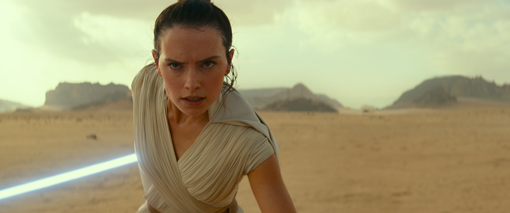

Please tweet all discoveries because to @cjlortie #exptsandbox #sciencejedi to make our designing transparent to the scientific community.
This course examines advanced concepts associated with the design and implementation of experiments in environmental and evolutionary biology. Both basic and applied designs are described and major contemporary developments summarized.
Alternative link for downloading here.
Module 1
The first 6 weeks of lectures (module 1) are traditional professor-lead instruction presenting and discussing the assigned textbook. This component of the lectures provided you with the critical elements, ideas, tools, and terminology you need to design experiments.
Module 2
The next 6 weeks of lecture focus on pragmatic primary research that both the instructor and students identify associated with their individual research interests. The primary purpose of this component of the lectures is to provide you with the opportunity to generate a novel, useful research proposal on the topic of your choice appropriate for graduate-level future research.
Labs
Learn by doing. The first component of the labs is student-lead group research experiment on an environmental/ecological/evolutionary experiment designed by the students. Once designed, a total of 3 weeks is provided to collect data.
The second component of the labs focuses on deep research on a topic of choice. This work supports the grant proposal and also the presentations.
Evaluation
Final course grades may be adjusted to conform to Program or Faculty grades distribution profiles.
Test. 40%
Lab report. 20%
Grant proposal. 20%
PechaKucha presentation. 20%
All work must be submitted to turnitin.com as PDF.
Class ID: 22040521
Key: experiment